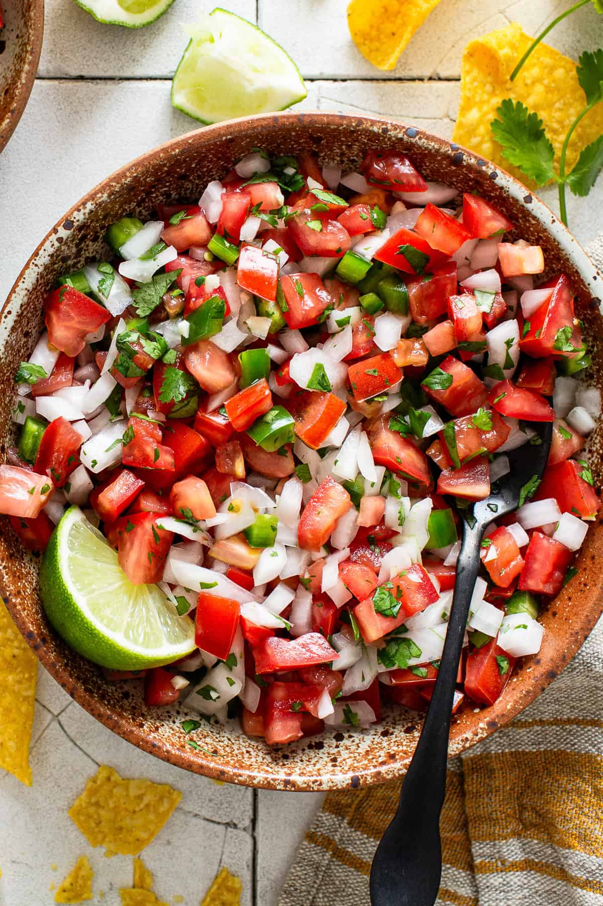

Beef Tacos

Home
How I really feel about pico de gallo
Pico de gallo is the perfect example of how raw ingredients can come together to create something magical. Fresh tomatoes, crunchy onions, fragrant cilantro, and a burst of lime juice come together in a simple, yet incredibly satisfying combination. The tomatoes bring a juicy sweetness, while the onions add a bite, and the cilantro adds a fresh pop that’s rounded out by the tang of lime. It’s fresh, bright, and vibrant—nothing too complicated, but everything you need.
But here’s the magic: the balance of flavors goes deeper with each bite. The sweetness of the tomato plays off the sharpness of the onion, and the cilantro adds a subtle earthiness that keeps things interesting. A little kick from jalapeños sneaks up on you, transforming the dish into something bold and exciting. Pico de gallo isn’t just a topping—it’s a flavor experience that elevates any meal with its freshness, its spice, and its satisfying crunch.
Let's make some pico de gallo, shall we?
- Tomatoes: The foundation of pico de gallo, providing a juicy, sweet, and tangy base that brings freshness and vibrancy to every bite.
- Onions: They offer a sharp, crisp texture and a mild pungency that balances the sweetness of the tomatoes, adding depth to the flavor profile.
- Cilantro: This herb introduces a bright, fresh, and slightly citrusy note, enhancing the overall flavor with its aromatic lift.
- Lime: A squeeze of lime adds a zesty tang that sharpens the flavors, giving the dish a refreshing and lively finish.
- Jalapeños: These peppers contribute a gradual heat that intensifies the flavor without overwhelming the dish, adding a spicy kick to the mix.
Here's how to use these ingredients to make these succulent, succulent, taco's.
- Chop the tomatoes: Dice the tomatoes into small, bite-sized pieces, removing any excess seeds if preferred.
- Finely chop the onions: Slice the onions into small, even pieces for a nice crunch and sharpness.
- Chop the cilantro: Roughly chop fresh cilantro, keeping the leaves and tender stems for flavor.
- Slice the jalapeños: Cut the jalapeños into thin slices or dice them, depending on your preferred level of spice.
- Combine the ingredients: In a bowl, mix together the tomatoes, onions, cilantro, and jalapeños.
- Season with lime and salt: Squeeze fresh lime juice over the mixture and season with salt to taste, stirring everything together.
- Let it sit: For best flavor, let the pico de gallo sit for about 10-15 minutes to allow the flavors to meld together.